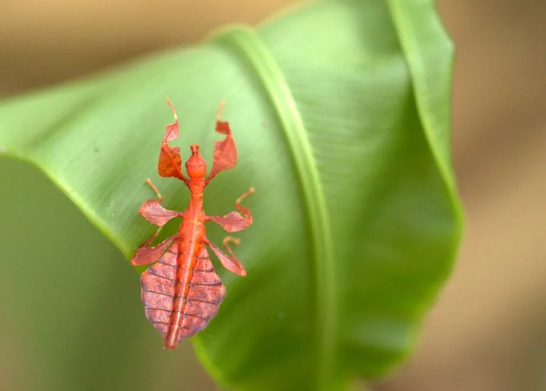

昆虫 · 动物界
丽叶䗛 Phyllium pulchrifolium

雌虫宽扁如绿叶、腹部边缘呈叶缘状的大型竹节虫，拟态极为逼真，取食番石榴与芒果叶，见于东南亚雨林。
- 分类
- 门节肢动物门纲昆虫纲目䗛目科叶䗛科属叶䗛属
- 栖息环境
- 热带雨林的果树与灌丛枝叶间，白天静止于叶片上
- 地理分布
- 东南亚热带雨林，包括马来西亚、印度尼西亚、泰国和菲律宾
- 保护级别
- 尚无保护级别；雨林砍伐与宠物贸易影响局部种群
物种志
丽叶䗛的雌虫体长约七至九厘米，体形宽扁，形似一片带柄的绿叶，体色鲜绿至黄绿，前胸背板与腹部两侧扩展成宽阔的叶状边，边缘有波状的缺刻，腹部背面有褐色的中线和侧脉状纹路，连叶片的枯斑都模仿得惟妙惟肖。它的翅退化，不能飞行，足也扁宽，像叶柄和叶脉。雄虫体形细长，翅发达，能飞行，体色偏黄褐，与雌虫差别很大。
它分布于东南亚的热带雨林，包括马来西亚、印度尼西亚、泰国和菲律宾，栖息在番石榴、芒果、红毛丹等果树的枝叶间，白天静止在叶片上，靠极逼真的拟态躲过鸟类和蜥蜴，夜间取食叶片。它属于渐变态昆虫，卵产于落叶层中，卵形似小种子，若虫孵化后经数次蜕皮长成成虫。雌虫行动迟缓，雄虫则较活跃，夜间有趋光性。它尚无保护级别，在分布区内较常见，但雨林砍伐和宠物贸易对局部种群有影响。
形态与习性
- 雌虫体长约七至九厘米，体形宽扁如叶
- 拟态腹部两侧扩展成叶状边，有叶脉状纹路
- 雌虫翅退化不能飞行；雄虫翅发达能飞
- 变态渐变态，卵产于落叶层中
- 食性夜行取食番石榴、芒果、红毛丹叶片
- 分布东南亚热带雨林
趣味知识
- 雌虫趴在叶子上时，连叶缘的波状缺刻和褐色枯斑都像真的。
- 雌雄差别极大，宽扁如叶的是雌虫，细长会飞的是雄虫。
- 它慢慢爬行时会轻微晃动身体，模仿被风吹动的叶子。